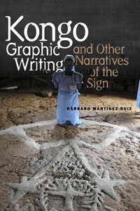

<body bgcolor="#FFFFFF" text="#000000" link="#0000FF" vlink="#CC0000" alink="#CC0000"><center><hr width="350" size="1" align="center" noshade>Tracing the history and development of visual traditions in the Kongo religions of Africa and Cuba (where it is known as Palo Monte)<hr width="350" size="1" align="center" noshade><p><a href="https://cdcshoppingcart.uchicago.edu/Cart/ChicagoBook.aspx?ISBN=9781439908167&&PRESS=temple" target="_top">Buy this book!</a> | <a href="https://cdcshoppingcart.uchicago.edu/Cart/Cart.aspx?PRESS=temple" target="_top">View Cart</a> | <a href="https://cdcshoppingcart.uchicago.edu/Cart/Cart.aspx?PRESS=temple" target="_top">Check Out</a></p><p></p></center><!--none//--><h1>Kongo Graphic Writing and Other Narratives of the Sign</h1>
<h3>Bárbaro Martínez-Ruiz</h3>
<P>cloth 1-4399-0816-8 $76.00, Feb 13, <FONT COLOR=#990033>Available</FONT>
<br>Electronic Book 1-4399-0818-4 $76.00 <FONT COLOR=#990033>Available</FONT>
<BR> 240 pp
7x10
10&nbsp;tables 66&nbsp;figures 63&nbsp;halftones
</P><BLOCKQUOTE><I>"</I>Kongo Graphic Writing and Other Narratives of the Sign<I> by Bárbaro Martínez-Ruiz is the most complete exploration and explanation of a specific indigenous African writing system, i.e., the </i>bidimbu<i> of the Bakongo people of Central Africa. As the text illustrates, this writing system had a profound influence in the formation of similar forms in the Caribbean and the Americas, such as </i>firmas<i> or </i>gandó<i> of Cuba, </i>vèvè<i> of Haiti, and </i>pontos riscados<i> of Brazil. Fluent in both Central African and Afro-Cuban cultures, Martínez-Ruiz fuses an original yet rigorous scholarly methodology with years of in-depth field research to produce one of the most useful texts for understanding the living nature of the African Diaspora. He also expands our consciousness of the religious objects themselves, the </i>minkisi<i> and </i>prendas<i>, as ‘physical forms of graphic writing’. For those interested in the spiritual and artistic traditions of Africa and their influence in the Americas, </i>Kongo Graphic Writing and Other Narratives of the Sign<i> is an essential new treasure."</I><br>&#151<b>C. Daniel Dawson</b>, Columbia University Institute for Research in African American Studies<I></I></BLOCKQUOTE>
<P>Written symbols, religious objects, oral traditions, and body language have long been integrated into the Kongo system of graphic writing of the Bakongo people in Central Africa as well as their Cuban descendants. The comprehensive <I>Kongo Graphic Writing and Other Narratives of the Sign</I> provides a significant overview of the social, religious, and historical contexts in which the Kongo kingdom developed.
<P>Author Bárbaro Martínez-Ruiz, an art historian and practitioner of the Palo Monte devotional arts, illustrates with graphics and rock art how the Bakongo's ideographic and pictographic signs are used to organize daily life, enable interactions between humans and the natural and spiritual worlds, and preserve and transmit cosmological and cosmogonical belief systems.
<P>Exploring cultural diffusion and exchange, collective memory and identity, <I>Kongo Graphic Writing and Other Narratives of the Sign</I> artfully brings together analyses of the complex interconnections among Kongo traditions of religion, philosophy, and visual/gestural communication on both sides of the African-Atlantic world.
<BR>&nbsp;<h2>Excerpt</h2><P>Excerpt available at <a href="http://www.temple.edu/tempress">www.temple.edu/tempress</a></p>
<BR>&nbsp;<h2>Reviews</h2>
<p><i>"</i>Kongo Graphic Writing and Other Narratives of the Sign<i> is a work of distinction, detailed and innovative, and one that enriches and deepens the topic immensely. The impact of Yoruba-speaking peoples on the African Diaspora in the Americas had dominated the literature, while the much older and deeper Kongo and Central African influences have been largely ignored. This book is well written and organized and will re-orient the entire field of African Diaspora arts/cultures debate. </i>Kongo Graphic Writing and Other Narratives of the Sign<i> is an excellent and groundbreaking work. It will be an essential book on the content and impact of Kongo thought on the formation of culture, society, and the arts that have had a profound impact on the shaping of the Black Atlantic world."</i><br>&#151<b>Henry John Drewal</b>, Evjue-Bascom Professor in the Departments of Art History and Afro-American Studies at the University of Wisconsin-Madison
<p><i>"</i>Kongo Graphic Writing and Other Narratives of the Sign<i> provides an engaging exposition of the logic of signs connecting times and places otherwise divided by centuries and seas. Martínez-Ruiz offers a very unusual insider’s perspective to esoterica, bringing his intimate knowledge of Cuban religion to bear upon his studies among Kongo peoples while applying insights from his work in west-central Africa to reflections upon his own Afro-Cuban heritage. The originality of his research and the compelling nature of the subject matter are matched by the book’s excellent illustrations."</i><br>&#151<b>Allen F. Roberts</b>, Professor of World Arts and Cultures, UCLA
<p><i>"In-depth description and interpretation of some complex examples nicely illustrate the processes of continuity and transculturation, especially in occult realms of behavior.... Summing Up: Recommended."</i><br>&#151;<b><i>Choice</i></b>
<p><i>"In a focused study of Central African and Cuba, </i>Kongo Graphic Writing and Other Narratives of the Sign<i> succinctly and precisely dismantles several old school paradigms of Africa....The product of not just several years of academic research, but a lifetime of involvement in the Afro-Cuban religion, Palo Monte, [the book] is a rare, ambitious scholarly work.... The methodology is rich and unconventional, mobilizing fieldwork, interviews, and archival research, along unique personal insights from within Palo Monte.... Martinez-Ruiz offers not just an academic explication of the history and mechanics of Afro-Atlantic graphic writing, but a practical sourcebook for future research."</i> <br>&#151<b><i>African Studies Quarterly</i></b>
<p><i>"Based upon decades of research on several continents and in many languages, this is the first study of precolonial Bakongo thought that includes Caribbean developments such as the Palo Mayombe initiation system founded in Cuba from the 1500s onward.... [T]his book is foundational for any project to revitalize transatlantic study of black cultures.... The study's significance is not limited to Central Africa, because as the author notes, other sub-Saharan regions developed parallel graphic writing systems.... The work is also refreshingly accessible to nonacademic readers.... It is well worth the attention of all professional and popular students of African and African American cultural history, religion, philosophy, cultural anthropology, and art history."</i><br>&#151<b><i>Hispanic American Historical Review</i></b>
<BR>&nbsp;<h2>Contents</h2><P>
<p>Acknowledgments
<p>1. Introduction
<br>Existing Literature
<br>Methodology</p>
<p>2. The Atlantic Passage: The Spread of Kongo Belief in Africa and to the Americas</p>
<p>3. The Process of Meaning Making: The Kongo Universe
<br>Kongo Cosmogony: Nza K&#244;ngo
<br>Kongo Cosmogony: Nza Cuba<p>
<p>4. Afro-Atlantic Graphic Writing: Bidimbu, Bisinsu, and Firmas
<br>Kongo Graphic Writing Systems: Overview of Character and Origins
<br>Ancient Memory: Rupestrain Art in Central Africa
<br>Writing to Preserve: Bidimbu and Bisinsu
<br>Writing to Remember: Firmas</p>
<p>5. Beyond the Scripture: Physical Forms of Graphic Writing
<br>Minkisi and Prendas: Written Objects
<br>Mambo: Writing Out Loud</p>
<p>6. Conclusion</p>
<p>Notes
<br>Bibliography
<br>Index</p>
</P><BR>&nbsp;<H2>About the Author(s)</H2>
<P><b>Bárbaro Martínez-Ruiz</b> is an Assistant Professor in the African Art and Its Diaspora/Latin American and Caribbean Arts at Stanford University.</P>
<BR><H2>Subject Categories</H2>
<p><A HREF="/tempress/african_studies.html" TARGET="_top">African Studies</a>
<BR><A HREF="/tempress/art.html" TARGET="_top">Art and Photography</a>
<BR><A HREF="/tempress/latin.html" TARGET="_top">Latin American/Caribbean Studies</a>
</p>
<p align="center"><a href="https://cdcshoppingcart.uchicago.edu/Cart/ChicagoBook.aspx?ISBN=9781439908167&&PRESS=temple" target="_top">Buy this book!</a> | <a href="https://cdcshoppingcart.uchicago.edu/Cart/Cart.aspx?PRESS=temple" target="_top">View Cart</a> | <a href="https://cdcshoppingcart.uchicago.edu/Cart/Cart.aspx?PRESS=temple" target="_top">Check Out</a></p><p><font face="Arial" size="1"><a href="copyright.html" onMouseOver="window.status='Web Copyright Policy';return true;" onMouseOut="window.status=''" title="Web Copyright Policy">&copy;</a> 2016 <a href="http://www.temple.edu" target="new" onMouseOver="window.status='Link to Temple University home page';return true;" onMouseOut="window.status=''" title="Link to Temple University home page">Temple University</a>. All Rights Reserved. http://www.temple.edu/tempress/titles/2189_reg.html</font></p>